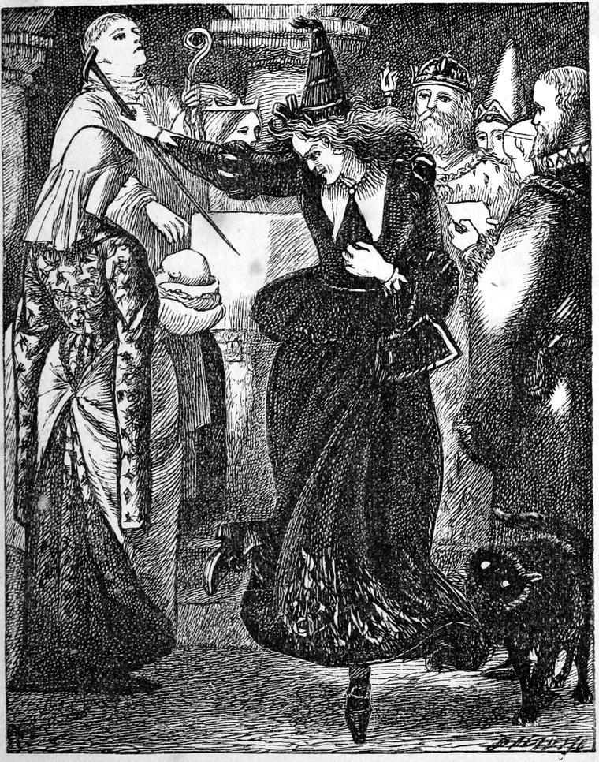

I. What! No Children?
Once upon a time, so long ago that I have quite forgotten the date, there lived a king and queen who had no children.
And the king said to himself, "All the queens of my acquaintance have children, some three, some seven, and some as many as twelve; and my queen has not one. I feel ill-used." So he made up his mind to be cross with his wife about it. But she bore it all like a good patient queen as she was. Then the king grew very cross indeed. But the queen pretended to take it all as a joke, and a very good one too.
"Why don't you have any daughters, at least?" said he. "I don't say sons; that might be too much to expect."
"I am sure, dear king, I am very sorry," said the queen.
"So you ought to be," retorted the king; "you are not going to make a virtue of that, surely."
But he was not an ill-tempered king, and in any matter of less moment would have let the queen have her own way with all his heart. This, however, was an affair of state.
The queen smiled.
"You must have patience with a lady, you know, dear king," said she.
She was, indeed, a very nice queen, and heartily sorry that she could not oblige the king immediately.
The king tried to have patience, but he succeeded very badly. It was more than he deserved, therefore, when, at last, the queen gave him a daughter—as lovely a little princess as ever cried.
II. Won't I, Just?
The day drew near when the infant must be christened. The king wrote all the invitations with his own hand. Of course somebody was forgotten.
Now it does not generally matter if somebody is forgotten, only you must mind who. Unfortunately, the king forgot without intending to forget; and so the chance fell upon the Princess Makemnoit, which was awkward. For the princess was the king's own sister; and he ought not to have forgotten her. But she had made herself so disagreeable to the old king, their father, that he had forgotten her in making his will; and so it was no wonder that her brother forgot her in writing his invitations. But poor relations don't do anything to keep you in mind of them. Why don't they? The king could not see into the garret she lived in, could he?
She was a sour, spiteful creature. The wrinkles of contempt crossed the wrinkles of peevishness, and made her face as full of wrinkles as a pat of butter. If ever a king could be justified in forgetting anybody, this king was justified in forgetting his sister, even at a christening. She looked very odd, too. Her forehead was as large as all the rest of her face, and projected over it like a precipice. When she was angry her little eyes flashed blue. When she hated anybody, they shone yellow and green. What they looked like when she loved anybody, I do not know; for I never heard of her loving anybody but herself, and I do not think she could have managed that if she had not somehow got used to herself. But what made it highly imprudent in the king to forget her was—that she was awfully clever. In fact, she was a witch; and when she bewitched anybody, he very soon had enough of it; for she beat all the wicked fairies in wickedness, and all the clever ones in cleverness. She despised all the modes we read of in history, in which offended fairies and witches have taken their revenges; and therefore, after waiting and waiting in vain for an invitation, she made up her mind at last to go without one, and make the whole family miserable, like a princess as she was.
So she put on her best gown, went to the palace, was kindly received by the happy monarch, who forgot that he had forgotten her, and took her place in the procession to the royal chapel. When they were all gathered about the font, she contrived to get next to it, and throw something into the water; after which she maintained a very respectful demeanour till the water was applied to the child's face. But at that moment she turned round in her place three times, and muttered the following words, loud enough for those beside her to hear:—

Light of body, every part,
Never weary human arms—
Only crush thy parents' heart!"
They all thought she had lost her wits, and was repeating some foolish nursery rhyme; but a shudder went through the whole of them notwithstanding. The baby, on the contrary, began to laugh and crow; while the nurse gave a start and a smothered cry, for she thought she was struck with paralysis: she could not feel the baby in her arms. But she clasped it tight and said nothing.
The mischief was done.